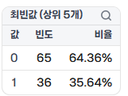
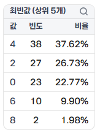
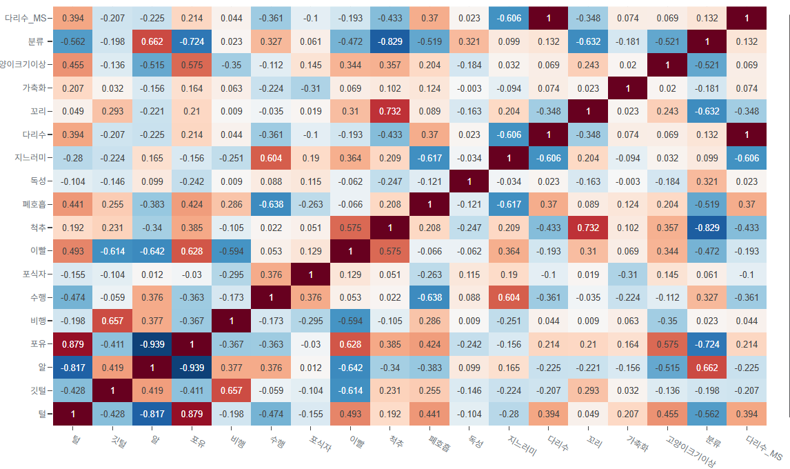

○○을 예측 하려고 한다 라는 문구가 있으면 예측 하려는 것이 종속 변수 이다
| 종속변수 | 수치형 데이터 | 문자형(객체) 데이터 |
|---|---|---|
| 결측치 대체 작업 하지 않는다 | 중앙값(median) [우선] ,또는 평균값 | 최빈값(most-frequent) |
결측치 처리 이전 칼럼은 삭제 또는 딥러닝 학습시 제외변수로 뺀다 (지시사항에 있음)
아래 설명은 수업예제중 동물분석인 경우에 해당함
문항 컬럼의 최빈값이 1또는 0으로 분포되고 특정 데이터 하나만 분포 범위값이 클 경우
해당 데이터는 scale조정에서 stategy -> Min-Max Scaler 로 처리한다 (지시사항에 있음)
|  |
 |
| output 컬럼 | input컬럼 | 제외컬럼 |
|---|---|---|
| 종속변수 | 종속변수에 영향을 주는 변수 | 종속변수에 영향을 주지 않는 변수 |
예) 3-2반의 국어 성적 데이터이다 학번, 이름, 국어점수, 공부시간, 수면시간에 대한 정보이고 국어점수를 예측 하려고 한다
| output 컬럼 | input컬럼 | 제외컬럼 |
|---|---|---|
| 국어성적 | 공부시간, 수면시간 | 학번, 이름 |
| 구분 | 예시 | 데이터유형 | 디코더선택 | 활성화 함수 |
|---|---|---|---|---|
| 분류 | 1등급, 2등급, A형, B형, 포유류, 조류.펭귄종류,붓꽃종류 합격.불합격 | Category | classifier | softmax(우선) sigmoid |
| 회귀 | 키, 몸무게, 점수, 가격.... | Numerical | regressor | linear |
| object(범주형) | sparse |
|---|

예) 값이 아닌 변수명을 작성하는 경우가 많음 (지시사항에 있음)
| 양의 상관관계(포유) | 음의 상관관계(포유) | 가장 강한 상관관계(포유) [절댓값 기준] |
|---|---|---|
| 0.879 (털) | -0.939 (알) | -0.939 (알) |
0에 가까울수록 두 변수 사이의 선형 상관관계가 낮다(거의 없다)라고 분석한다.